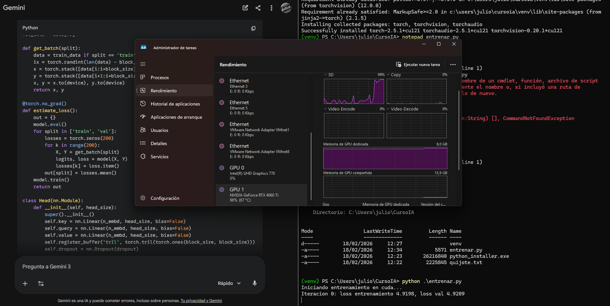
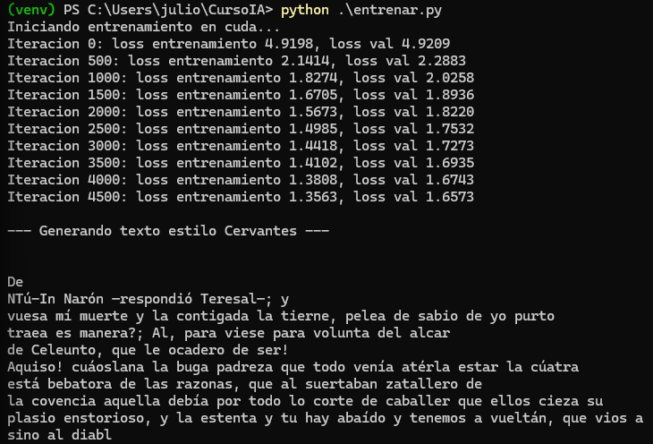
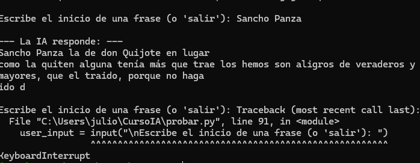

Fase 1: Preparación del Dataset
Para este ejercicio, cargamos el texto íntegro de Don Quijote de la Mancha. El primer paso es convertir cada carácter en un ID numérico único. Al ser un modelo pequeño, trabajamos a nivel de carácter para simplificar el vocabulario.

Evidencia: Carga del archivo .txt y visualización de los primeros tokens generados
Fase 2: Activación de Aceleración por Hardware
El pre-entrenamiento es computacionalmente costoso. Configuramos PyTorch para detectar el núcleo CUDA de la GPU. Sin esto, el entrenamiento de los patrones estadísticos del castellano antiguo tardaría días en lugar de minutos.
import torch
device = 'cuda' if torch.cuda.is_available() else 'cpu'
print(f"Entrenando en: {device}")

Consola: Confirmación de "Running on CUDA" y reserva de VRAM inicial
Fase 3: El Bucle de Entrenamiento
Durante el entrenamiento, el modelo intenta predecir la siguiente letra. Si falla, el optimizador ajusta los pesos de las neuronas. Buscamos que el valor de "Loss" (pérdida) disminuya progresivamente.

Gráfica de Loss: Se observa la convergencia del modelo tras 5000 iteraciones
Fase 4: Inferencia (Hablando con Cervantes)
¡Hora de la verdad! Introducimos un "prompt" como "En un lugar de la Mancha..." y dejamos que el modelo complete el texto basándose en la probabilidad estadística que ha aprendido.
# Ejemplo de salida del modelo
"En un lugar de la Mancha, de cuyo nombre no quiso el caballero Sancho..."